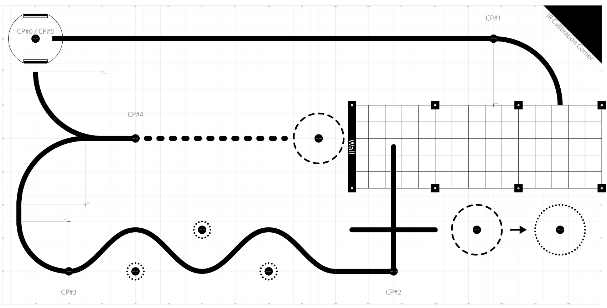
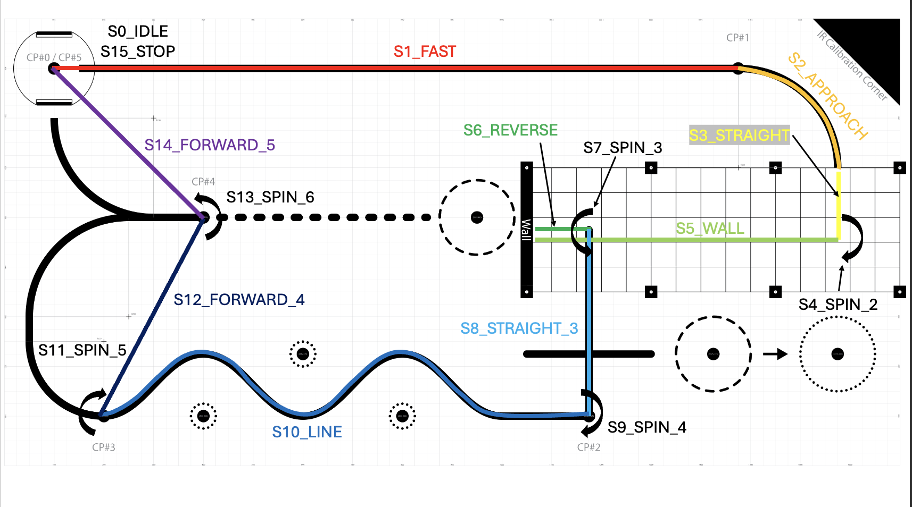

- Generated by
 1.16.1
1.16.1
|
Romi Autonomous Robot - ME 405
Your Go-To Spot for all things Romi!
|
To complete the ME 405 term project, teams are tasked with using their completed robots through a playfield of specific checkpoints. The robots should follow each of the individual checkpoints in order and focus on not just speed at which the course is completed, but also for repeatability in performance. This page will describe the scenario and characteristics of the final task requirements and then demonstrate our team's solution in solving this task.

Above is an image of the playfield given to the teams for the final task. This section will walkthrough the requirements for each section of the final task and outline some of the bonuses/penalties that are available on the playfield.
Checkpoint 0 will act as the starting point for all robots. The robot can be place at whatever heading desired, but likely will be started in the direction toward checkpoint 1. The distance to checkpoint 1 is a long straightaway and can test the robot's ability on both line following and fast pace movement. While line following is not explicitly required, it will be very beneficial as the distance between checkpoint 0 and checkpoint 1 can be quickly covered.
The path from checkpoint 1 to checkpoint 2 is started with a slight line curve into the garage, a enclosed garage that has aluminum extrusions and fencing to enclose the area with a wall at the other end, and then another lined section at the garage exit. Teams are to enter the garage from the entrance near checkpoint 1, maneuver through the garage carefully, use the wall on the other side as an object to detect using bump sensors, and then exit the garage and to checkpoint 2.
Between these 2 checkpoints is the first opportunity for a bonus. At the lined section near the garage exit, a cup will be standing in the dotted line. To receive this bonus, the robot is to push the cup from the dashed line into the dotted line (see arrow). This bonus could be used a time deduction in the team's overall track performance.
From checkpoint 2 to checkpoint 3 is a lined section known as the slalom. This curved path is to test the robot's line following capabilities and to see if the PID controllers can accurately correct the steering of the robot.
Within this section is the first instance of possible penalties. At every anti-peak, is a ping pong ball resting on a large hex nut denoted as a dark circle surrounded by a dotted line. If the robot were to knock these ping pong balls off of their stands, then this would lead to an addition to the robot's time performance. This would task teams with highly improving their robot's line following performance so as to avoid these penalties.
The distance from checkpoint 3 to checkpoint 4 has a curved line path. While this distance could be covered with just line following, there is a Y-section near the end of the path that could cause problems if using line following. However, if teams accurately navigate to checkpoint 4 using this path, it would line them up for the final bonus available on this track.
The final bonus is to push a plastic cup out of the ring next to the wall of the garage. While teams are lined up if they reach checkpoint 4 using the line following, the wall prevents them from pushing the cup from this head on orientation. In order to receive the bonus, teams will likely have to move to the side of the cup to push it out of the circle.
The final checkpoint is from checkpoint 4 to checkpoint 5. If avoiding the bonus cup near the wall, the teams would need to rotate to the opposite heading from which they started at and then line follow again back through the Y-section and this time take the path up to checkpoint 5. This would serve as the end of the course as checkpoint 5 and checkpoint 0 are the same spot.
Now that the characteristics of the final task have been described, we can now describe how our team went about completing this task.
Our team decided to complete this task as an implemented task in the scheduler, similar to that of the motor, line following, and state estimation tasks. The task itself is a large multi-part FSM that transfers between states once it has reached certain corresponding aspects. Below is a revision on the playfield that shows where exactly each state of the FSM is.

In the idle state, the robot initializes preliminary parameters in preparation for the next state. With the motor flags not set to high yet, the high speed setpoint is set for the motors and line following is disabled. The idle state then sets the motor flags and observer flags to high before changing over to the sprint state.
In the sprint state, the robot continues its high speed sprint. The sprint state actively reads the heading of the robot to try and find any possible drift that could occur from the sprint. It then corrects the motor speeds to help correct this possible drift as the robot approaches checkpoint 1. The absolute x-position of the robot is then compared to a "slow down distance" and once the slow down distance has been reached, the setpoint speed is changed to a much slower speed and line following is enabled before moving into the approach state.
In the approach state, the robot activates the line following at the much lower setpoint speed. This allows more time for correction and for more precise movement around the turn. At the same time, the IMU is tracking the change in heading. Once the IMU detects a change in heading of 75 degrees from the beginning of the state, then it switches to the first straight state. Theoretically, this value should be a 90 degree change but due to drift and variation in runs, the set value of 75 proved to be more a better adjusted value.
This state is simply to get the robot within the garage without bumping into any of the bars of the enclosure. The line following is turned off and state estimation is used to drive the robot forward a set distance. Once this set distance is met, then we change over to state 4.
In this first spin state, the robot is to pivot 90 degrees to face forward towards the wall while inside the garage. Some refinement must be done with the variables so that the front mounted bump sensor does not collide with the poles of the garage. The robot also turns based on 180 degrees from the INITIAL heading. Based on the theoretical travel path, a 180 degree difference from the initial heading would face the robot toward the wall. This is to help overcome any drift in heading that may have occurred from the previous 3 states. Once the robot has detected this change in heading, it moves into state 5.
Within state 5, the robot moves forward still at the slow speed setpoint since we are inside the garage. It continues to move forward until the bump sensor activates. The bump sensor is hooked up such that once side is always high and the other side is connected to an input pin configured with a pull down resistor. This means the input pin is always low unless an obstacle has been ran into and then sets the pin high. This allows us to quickly stop the robot once the bump sensor has changed state. Once this condition does happen, the setpoint speed is changed to negative to make the robot move backwards and we change over to state 6.
In the reverse state, the robot move backwards a set amount of distance to line up to exit the garage. This distance can be edited from the constants at the top of the task. This distance had to be closely tuned to avoid not backing up enough before moving into the next state. Using the state estimation, once the robot has reached the set backwards distance then we move into state 7.
In state 7, the robot rotates a set amount from the constants section (HEADING_SPIN_DEG). Similar to entering, the rotation amount must be heavily tuned to avoid hitting the bars/wall of the garage. This means that the rotation constant is actually less than the theoretical 90 degrees from the ideal path. Once the change in heading has reached this set constant, then we move into state 8.
In state 8, the robot moves forward a set amount of distance similar to state 3. This moves the robot out of the garage and on top of checkpoint 2. Once this constant distance has been moved as evaluated by the state estimator, then the robot moves into state 9.
State 9 follows a similar format to states 4 and 7. This is a controlled 90 degree turn to face the robot forward toward the slalom. However, at the end of state 9, the line follower is reenabled as we move into state 10.
State 10 uses line following to navigate through the slalom. The gain constants were tuned prior to the final presentation to help avoid deductions from the ping pong balls. Specifically, the Kd constant had to be increased to help the robot to correct harder around the tight turns of the slalom. The slalom separates checkpoint 2 from checkpoint 3 and the robot knows it has ended this section once the change in X position has reached a set point. Since each checkpoint has a known distance, this distance can be easily found and set as a constant. This constant is then adjusted to help with drift from the state estimator. Once the change in X distance has been reached, the disables the line following and stops before switching to state 11.
In the final stretch of the course, the lines could be used to navigate, but our team has decided to ignore these lines and rely on our state estimator to navigate to each of the final checkpoints. In prior testing, our state estimator has been highly accurate so we decided to avoid line following. In this state, the robot rotates about checkpoint 3 to face toward checkpoint 4. Once this heading has been reached, then we move over to state 12.
Within state 12, we move from directly in a straight line from checkpoint 3 to checkpoint 4 after aligning the heading during state 11. Once the robot has reached a set traveled distance from checkpoint 3 to reach checkpoint 4, then we move into state 13.
States 13 and 14 follow a similar format to the previous 2 states. The first state helps to align the robot toward the next checkpoint and then the state after directs the robot toward it. State 13 is the alignment state that rotates the robot toward checkpoint 5 which then leads to state 14.
State 14 is the final movement state that moves the robot forward toward checkpoint 5 once it has been aligned in the previous state. Once over checkpoint 5 (the final checkpoint), then the robot moves to the final state 15.
State 15 sets all movement functions to 0 by setting all setpoint speed/steer values to 0, setting all go flags to false and disabling all motors. With the robot returned to its original position at checkpoint 0/5, the course has been completed.